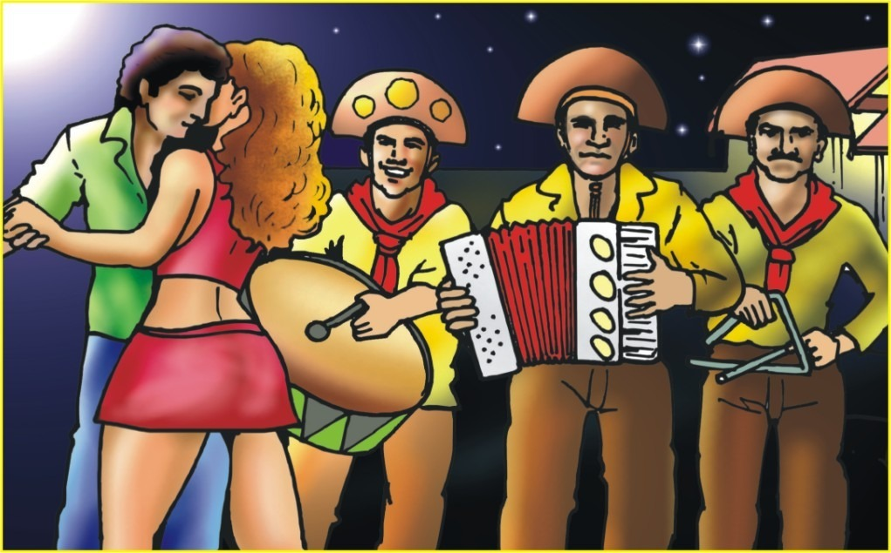

O que é: O forró é uma dança popular de origem nordestina. Esta dança é acompanhada de música, que possui o mesmo nome da dança. A música de forró possui temática ligada aos aspectos culturais e cotidianos da região Nordeste do Brasil. A música de forró é acompanhada dos seguintes instrumentos musicais: triângulo, sanfona e zabumba.
História do Forró : De acordo com pesquisadores, o forró surgiu no século XIX. Nesta época, como as pistas de dança eram de barro batido, era necessário molhá-las antes, para que a poeira não levantasse. As pessoas dançavam arrastando os pés para evitar que a poeira subisse.
Origem do nome : A origem do nome forró tem várias versões, porém a mais aceita é a do folclorista e pesquisador da cultura popular Luiz Câmara Cascudo. Segundo ele, a palavra forró deriva da abreviação de forrobodó, que significa arrasta-pé, confusão, farra.
Características : Uma das principais características do forró é o ato de arrastar os pés durante a dança. Esta é realizada por casais, que dançam com os corpos bem colados, transmitindo sensualidade. Embora seja tipicamente nordestino, o forró espalhou-se pelo Brasil fazendo grande sucesso. Foram os migrantes nordestinos que espalharam o forró, principalmente nas décadas de 1960 e 1970. Atualmente, existem vários gêneros de forró: forró eletrônico, forró tradicional, forró universitário e o forró pé de serra.
